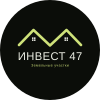
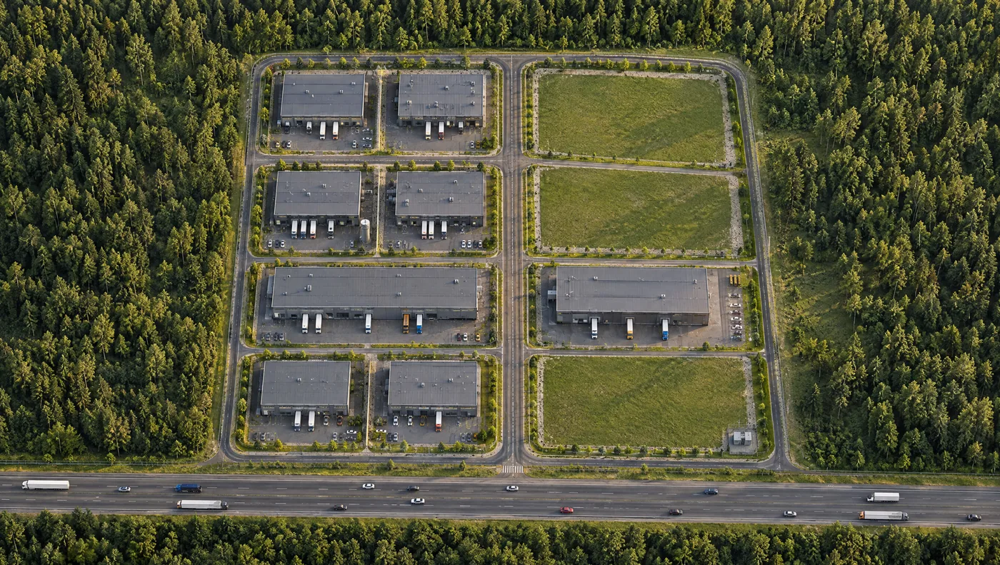

Промназначение · Мурманское шоссе
11 участковСвободно 3 из 11
от 11,5 млн ₽

Инвест 47Земельные участки ПозвонитьЗемля и коммерческая недвижимость для бизнеса и инвестиций
Листайте вниз
Визуализация
Ленинградская область · более 15 лет
Промышленные и коммерческие площадки, участки ИЖС и сельхозземля. Продаёт собственник, без посредников.
Точки на карте - объекты. Нажмите, чтобы открыть
Объекты Инвест 47
Изображения объектов - визуализации
Промышленные и коммерческие площадки, участки ИЖС и крупные загородные участки. Нажмите на объект, чтобы посмотреть подробности.
Промназначение · Мурманское шоссе
11 участковСвободно 3 из 11
от 11,5 млн ₽
Промназначение · Мурманское шоссе
2,2 гаВ продаже
Цена по запросу
Коммерческая недвижимость · Мурманское шоссе
1188 м²В продаже
Цена по запросу
Коммерческое назначение · Мурманское шоссе
66,03 сотки5 участков и дорога
Цена по запросу
Промназначение · Колтушское шоссе
50 сотокВ продаже
Цена по запросу
Промназначение
2 гаВ продаже
Цена по запросу
Промназначение
1,75 гаВ продаже
Цена по запросу
Производственно-складское
10 участковСвободно 4 из 10
Цена по запросу
ИЖС
от 10 соток4 участка
от 3 085 000 ₽
Сельхозназначение
12,32 га11 участков
от 4 млн ₽
Сельхозназначение
6,56 га5 участков
от 4 млн ₽
Под отдых и туризм
Большая территорияВ продаже
Цена по запросу
Земля и коммерческая недвижимость для вашего бизнеса и инвестиций
«Инвест 47» - компания, специализирующаяся на продаже земельных участков и коммерческой недвижимости. Мы работаем с объектами различного назначения, помогая клиентам находить перспективные площадки для реализации бизнес-проектов, развития производства, строительства и инвестиций.
В нашем портфеле - земельные участки промышленного и делового назначения, участки ИЖС и сельскохозяйственные земли, а также производственные и складские помещения.
Мы ориентируемся на долгосрочную ценность объектов, перспективы их развития и практические задачи наших клиентов. Благодаря многолетнему опыту работы на рынке помогаем подобрать недвижимость под конкретные цели - от размещения производственных мощностей и складских комплексов до строительства жилых объектов и реализации инвестиционных проектов.
«Инвест 47» - недвижимость с потенциалом для вашего будущего.
Промышленный парк на 6 км Мурманского шоссе. Из 11 участков продано 8. Остались три - все на одной внутренней дороге, с выездом на трассу.
Наведите или нажмите на участок. Зелёные - свободны, тёмные - уже проданы. Трасса Кола проходит по нижнему краю.

Мурманское шоссе, Колтушское городское поселение. Быстрый доступ к КАД и к Петербургу.
Участки стоят прямо у федеральной трассы - удобно для фур, техники и клиентов.
Мощность уже выделена, подстанция находится на участке. Не нужно ждать техприсоединения.
Никакой управляющей компании и ежемесячных сборов. Участок продаётся с долей в общей дороге.
Вместе с участком вы получаете долю в участке под общей дорогой - подъезд никто не перекроет.
Без посредников и комиссии. «Инвест 47» работает на рынке недвижимости больше 15 лет.
Склад. Производство. Автосервис. Энергетика.
Участки у трассы Кола относятся к землям промышленности, энергетики, транспорта, связи и иного специального назначения. Виды разрешённого использования уже внесены в ЕГРН - менять ничего не нужно.
Расскажите, под какую задачу нужна земля. Подскажем, какой участок подойдёт.
Встретимся на участке, покажем границы, дорогу и подстанцию.
Кадастровые номера, выписка из ЕГРН, право собственности. Проверяйте сами или с юристом.
Договор купли-продажи и регистрация в Росреестре. Участок и доля в дороге переходят к вам.
19 октября 2026 · 7 мин
Инвестиции в землю под Санкт-Петербургом: какие участки берут под вложения - промназначение у трасс, мощность, сельхозземля, ИЖС - и какие риски проверить.
19 октября 2026 · 7 мин
Как купить земельный участок дистанционно, не приезжая в Петербург: проверка документов, электронная регистрация, доверенность и безопасные расчёты.
19 октября 2026 · 6 мин
Крупный участок от 1 гектара в Ленинградской области: под что покупают, как проходят раздел и объединение, что с кадастровыми номерами и расходами.
12 объектов в Ленинградской области: промышленные площадки с подстанциями от 150 кВт до 3 МВт, коммерческие участки и здание у Мурманского шоссе, участки ИЖС и крупные загородные участки от 1 га. Все объекты собраны на главной в разделе «Объекты». Цены и документы по каждому - по телефону +7 911 090-47-47.
Ленинградская область, Всеволожский район, Колтушское городское поселение, 6 км Мурманского шоссе. Участки стоят у трассы Р-21 «Кола», выезд на неё по внутренней дороге парка.
Земли промышленности, энергетики, транспорта, связи и иного специального назначения. Виды разрешённого использования: склад, производственная деятельность, пищевая, лёгкая, строительная и автомобилестроительная промышленность, энергетика, ремонт автомобилей, автомойки, коммунальные услуги. Выписку из ЕГРН покажем до сделки.
Да, в парке подключено 150 кВт, подстанция стоит на участке у трассы. Не нужно ждать техприсоединения с нуля. Сколько мощности приходится на конкретный участок, расскажем по телефону.
Нет. Управляющей компании и ежемесячных сборов нет. Вместе с участком вы получаете долю в участке под общей дорогой, поэтому подъезд никто не перекроет.
Да. Позвоните по номеру +7 911 090-47-47 - договоримся о времени, встретим на участке и покажем границы, дорогу и подстанцию.
Позвоните нам по номеру +7 911 090-47-47: обсудим участок и условия. Самостоятельно добавить участок на витрину нельзя - мы сначала проверяем документы, ВРИ, подъезд и коммуникации, а потом публикуем участок сами с отметкой «Проверено Инвест 47».
Контакты
Ленинградская обл., Всеволожский р-н, Колтушское городское поселение, Мурманское шоссе, 6 км.
Расскажем про участки, ответим на вопросы и договоримся о показе.
+7 911 090-47-47 Позвонить